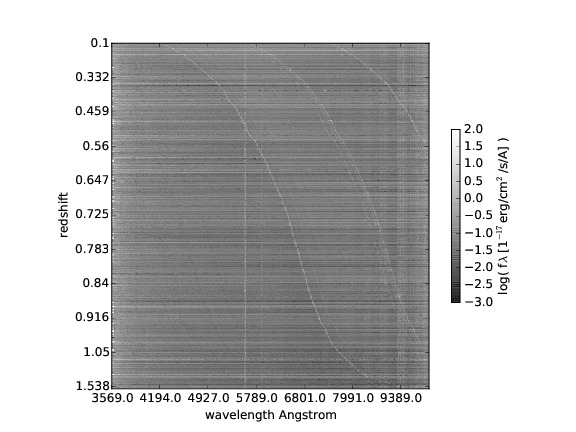

|  |
Mocking emission line galaxy clustering |
| In the current paradigm, the structures and galaxies form hierarchically, and larger halos are formed by the coalescence of smaller progenitors. From a macroscopic or thermodynamical point of view, the galaxies made of dark matter, stars and gas are typically described like a global system composed of the following tightly interacting sub-systems: the dark matter halo, the central black hole, the stars, the cold gas and the hot gas. In addition, the galaxy interacts with its outside where it ejects gas or from where it accretes matter (from the intergalactic medium). A galaxy in this model can therefore be characterized by the mass of each of its components and the share of mass constituted by elements heavier than hydrogen. |
| Please click here to access the mock ELG catalog based on the MultiDark Planck Simulation that reproduces the clustering observed at redshift 0.8. |
| If you use these mocks, please cite Favole et al. 2016 and Comparat et al. 2015. |
last update, feb. 2016, by Johan Comparat.